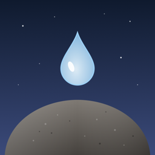

드롭스톤 Dropstone
집중한 10초가 물방울 하나가 되는 집중 타이머
자주 묻는 질문
구독을 해지하거나 바꾸고 싶어요
아이폰 설정 > Apple ID(맨 위 이름) > 구독 > Dropstone에서 해지하거나 연간·월간을 바꿀 수 있어요. 다음 결제 24시간 전까지 해지하면 다음 결제가 되지 않아요. 7일 무료 체험 중에 해지하면 요금이 나가지 않아요. 안드로이드는 Google Play 스토어 > 프로필 > 결제 및 구독 > 구독 > Dropstone에서 해지할 수 있어요.
새 휴대폰에서 구매 내역이 안 보여요
결제 화면 아래 '구매 복원'을 누르면 같은 Apple ID(아이폰) 또는 같은 Google 계정(안드로이드)으로 산 구독이나 평생 이용권이 다시 적용돼요. 아이폰에서 산 구매는 안드로이드로 옮겨지지 않아요(반대도 같아요).
기록은 어디에 저장되나요?
집중 기록과 설정은 휴대폰 안에만 저장돼요. 개발자를 포함해 누구에게도 보내지 않아요. 기기 백업(iCloud, Google 계정 백업 또는 컴퓨터)에는 함께 들어갈 수 있지만, 앱을 지우면 기록도 함께 지워져요.
화면을 잠그거나 다른 앱을 써도 집중으로 쳐요?
기본은 '다른 앱에서도 집중으로 인정'이 켜져 있어서, 화면을 잠그거나 전자책 같은 다른 앱을 봐도 10초마다 물방울 소리가 나고 기록돼요. 더 엄격하게 하려면 기록 창에서 이 스위치를 끄세요. 그러면 다른 앱으로 가서 15초가 지났을 때 맺히던 물방울이 증발해요.
무음 모드인데 물방울 소리가 나요
화면을 잠가도 소리를 내기 위해 음악처럼 미디어 소리로 재생해요. 조용히 하려면 기록 창에서 '물방울 소리'를 끄거나 '소리 크기'를 줄여 주세요.
하늘이 실제와 조금 달라요
위치 권한을 쓰지 않고, 휴대폰 시간대의 대표 도시를 기준으로 해와 달의 위치를 계산해요. 같은 시간대 안에서도 지역에 따라 조금 다를 수 있어요.
문의
궁금한 점이나 불편한 점은 gutentag0224@gmail.com으로 보내 주세요.
Frequently asked questions
How do I cancel or change my subscription?
Open Settings > Apple ID (your name at the top) > Subscriptions > Dropstone. Cancel at least 24 hours before the next charge to avoid it. If you cancel during the 7-day free trial, you won't be charged. On Android, open Google Play Store > your profile > Payments & subscriptions > Subscriptions > Dropstone.
My purchase doesn't show up on my new phone
Tap "Restore purchases" at the bottom of the subscription screen. Subscriptions and lifetime access bought with the same Apple ID (iPhone) or Google account (Android) will be restored. Purchases don't move between iPhone and Android.
Where are my records stored?
Your focus records and settings are stored only on your phone and are never sent to anyone, including the developer. They may be included in device backups (iCloud, Google account backup or computer), but deleting the app deletes them.
Does time count when my screen is locked or I'm in another app?
By default, "Count time in other apps" is on: lock your screen or read in another app and you'll still hear a drop every 10 seconds and your time is recorded. For a stricter mode, turn this switch off in your record. Then the forming drop evaporates 15 seconds after you switch to another app.
I hear drops even in Silent mode
To keep playing while your screen is locked, the drop sound plays as media audio, like music. To keep it quiet, turn off "Drop sound" or lower the volume in your record.
The sky looks slightly different from outside
Dropstone doesn't use your location. It calculates the sun and moon for a major city in your phone's time zone, so it can differ a little within the same time zone.
Contact
Questions or problems? Email gutentag0224@gmail.com.